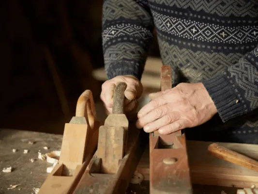
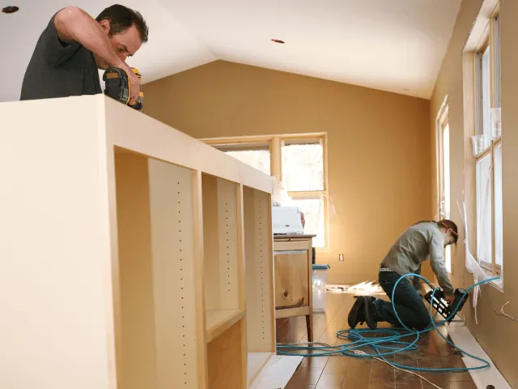
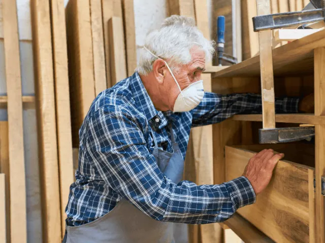

Partnerbijdrage
Kies voor een unieke meubels, ambachtelijke gemaakt door de meubelmaker
Gepubliceerd op 12 juni 2023, bijgewerkt op 7 december 2023

Hoe gaaf is het om een meubelstuk in huis te hebben dat niemand anders is. Bijvoorbeeld een unieke eettafel, een lust voor het oog en een uniek, ambachtelijk kunstwerk om heerlijk aan te tafelen. Daarvoor nemen we je graag mee in de wereld van de houtbewerking. Want wat doet een meubelmaker precies? Is het moeilijk om zelf te doen? Of kun je het makkelijk leren? En tot slot waar in Nijmegen kan je terecht of vind je een leuke cursus.
Wat doet een meubelmaker?
Een meubelmaker is een vakman of vakvrouw die gespecialiseerd is in het maken van meubels. Hij of zij ontwerpt, maakt en repareert meubels, variërend van tafels, stoelen, kasten tot bedden. Meubelmakers gebruiken hiervoor verschillende soorten hout en andere materialen, zoals stoffen, leder of metaal.
Het werk van een specialist begint met het ontwerp en de planning van het meubelstuk. Hierna bepaalt de meubelmaker de selectie van de juiste materialen en gereedschappen, het opstellen van een gedetailleerd plan en het berekenen van de kosten. Vervolgens wordt er met behulp van verschillende gereedschappen en technieken om het meubelstuk te maken. Hierbij moet je denken aan het zagen, schaven, frezen, boren, lijmen en afwerken van het hout. Het is de taak om ervoor te zorgen dat het meubelstuk er niet alleen mooi uitziet, maar ook functioneel en duurzaam is. En uniek!
Naast het maken van nieuwe meubels, kan men ook meubels repareren of renoveren. Dit omvat het herstellen van beschadigde meubels, het vervangen van onderdelen en het opnieuw afwerken van oppervlakken. Meubelmakers werken vaak in een werkplaats, maar sommigen werken ook op locatie, bijvoorbeeld bij het installeren van op maat gemaakte meubels.
Waarom kies je voor een meubelmaker?
Het inschakelen van een professionele meubelmaker om je droomcreatie te realiseren biedt talrijke voordelen. Ten eerste bieden meubelmakers maatwerk dat volledig is afgestemd op jouw persoonlijke smaak en ruimte. Dit zorgt ervoor dat elk stuk uniek is en perfect past in de beoogde omgeving, of het nu gaat om een specifieke maat, stijl of functionaliteit. Een tweede voordeel is de superieure kwaliteit en vakmanschap. Professionele meubelmakers gebruiken hoogwaardige materialen en technieken, wat resulteert in duurzame, tijdloze meubelstukken die generaties lang meegaan. Door een meubelmaker in te schakelen, investeer je niet alleen in een meubelstuk, maar in een erfstuk dat verhalen en herinneringen bewaart en doorgeeft.

Kun je zelf leren je eigen meubels te maken?
Ja, dat kan zeker! Het maken van meubels vereist wel enige kennis en vaardigheden, maar het is een ambacht dat kan worden geleerd en ontwikkeld door middel van praktische ervaring en het bestuderen van de theorie, zoals het kennen van de gereedschappen, materialen en technieken.
Er zijn verschillende manieren om te leren hoe je meubels maakt. Een manier is door middel van boeken, online tutorial en video’s, die je vaak op YouTube kunt vinden, waarin de basisprincipes van houtbewerking en meubelontwerp worden uitgelegd. Daarnaast zijn er workshops en cursussen waar je onder begeleiding van een meubelmaker aan de slag kunt gaan en de nodige vaardigheden kunt opdoen.
Het is belangrijk om te beginnen met kleine projecten en het gebruik van eenvoudige gereedschappen, zodat je langzaam maar zeker meer ervaring opdoet en je vaardigheden kunt verbeteren. Het is ook nuttig om te leren van de fouten die je maakt, zodat je de volgende keer beter weet wat je moet doen.
Het kan dus zeker, maar het vraagt wel tijd en geduld, en je zult het enige tijd moeten doen voor je echt aan grote projecten kunt beginnen.
Houtbewerking Meesteren: Cursussen in Nijmegen
Welke meubelmakers raden wij aan in Nijmegen?
Nijmegen kent diverse getalenteerde meubelmakers die met hun vakmanschap en creativiteit iedere woon- of werkomgeving kunnen verrijken. Hieronder lichten we een aantal van deze ambachtslieden uit.
Tommiek
Bij Tommiek draait alles om het creëren van unieke, op maat gemaakte houten meubels die zowel functioneel als esthetisch aantrekkelijk zijn. Elk stuk wordt met de hand vervaardigd, waarbij de natuurlijke schoonheid van het hout centraal staat. Dit resulteert in opvallende meubelstukken die perfect passen in zowel moderne als klassieke interieurs.
Meubelmakerijopshout
Meubelmakerijopshout staat voor een persoonlijke benadering en nauwe samenwerking met de klant. Van het eerste ontwerp tot het eindproduct, ze betrekken je bij elk detail van het maakproces. Hun specialisatie in massief hout zorgt voor duurzame en tijdloze meubelstukken, die generaties lang meegaan.
Casper Rutges
Casper Rutges is een meubelmaker die uitblinkt in het ontwerpen en vervaardigen van strakke, eigentijdse meubels. Zijn focus ligt op het gebruik van hoogwaardig massief hout, wat zorgt voor een robuuste en natuurlijke uitstraling. Of je nu op zoek bent naar een elegante eettafel of een functionele kast, Casper Rutges kan je droommeubel realiseren.
Conclusie: Het Ambacht van Meubelmaken in Nijmegen
De wereld van meubelmaken in Nijmegen is een samensmelting van vakmanschap, creativiteit en uniek design. Het kiezen voor een meubelmaker biedt de unieke kans om een persoonlijk en op maat gemaakt meubelstuk te bezitten dat perfect aansluit bij je eigen stijl en interieur. Meubelmakers zoals Tommiek, Meubelmakerijopshout en Casper Rutges staan bekend om hun aandacht voor detail, gebruik van kwaliteitsmaterialen en het vermogen om de klant volledig te betrekken bij het ontwerpproces. Deze ambachtslieden maken niet alleen functionele meubelstukken, maar creëren ook kunstwerken die generaties lang gekoesterd kunnen worden.
De interesse in het zelf leren maken van meubels groeit, en gelukkig zijn er in Nijmegen voldoende mogelijkheden om deze vaardigheid te ontwikkelen. Van online tutorials tot workshops en cursussen, er zijn diverse manieren om de grondbeginselen van het meubelmaken onder de knie te krijgen. Hoewel het een tijdrovende en soms uitdagende hobby kan zijn, biedt het veel voldoening en een diepere waardering voor het ambacht.
In Nijmegen kun je bij verschillende meubelmakers terecht voor zowel unieke meubelstukken als cursussen en workshops om zelf het vak te leren. Of je nu op zoek bent naar een op maat gemaakt meubelstuk of geïnteresseerd bent in het zelf leren maken van meubels, Nijmegen biedt een rijke omgeving vol mogelijkheden en inspiratie.